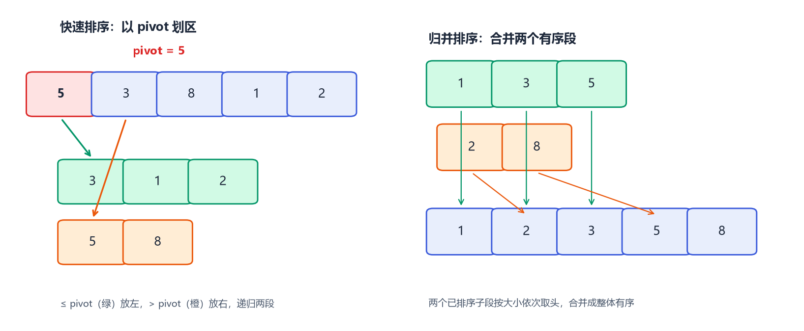
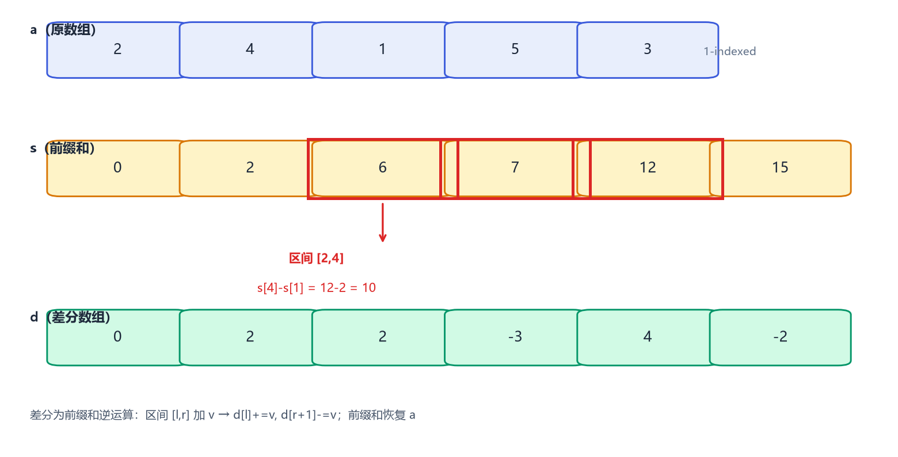
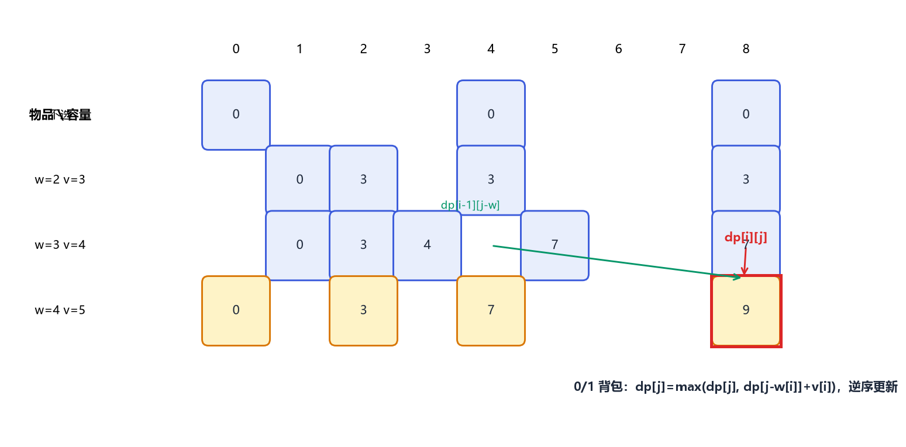
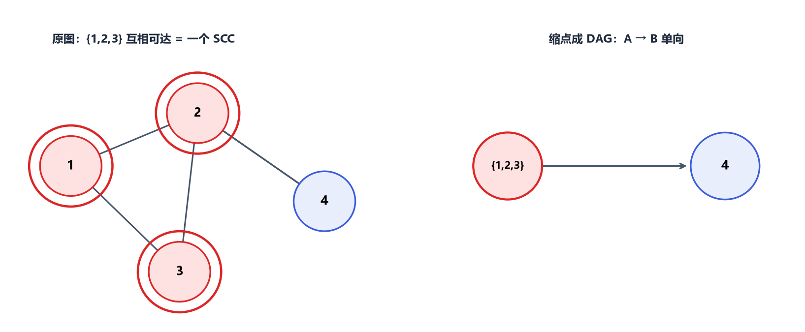

第12章 算法专题
算法是 CSP-S 复赛的"兵器库"。本章按"思想 → 模板 → 真题"组织，覆盖排序、二分、前缀和、双指针、倍增、分治、搜索、贪心、动态规划、字符串进阶与图论进阶。每个知识点都给出可直接抄写的 C++17 模板。
12.1 排序
排序是最基础的预处理：很多题目"排个序就做完了"。
12.1.1 快速排序（手写分区，洛谷 P1177 思路）
选取基准 pivot，把 ≤ pivot 的放左边、> pivot 的放右边，递归处理两段。平均 O(n log n)，最坏（已排序且总取首元）O(n²)。

#include <iostream>
#include <vector>
using namespace std;
int partition(vector<int>& a, int l, int r) {
int pivot = a[l], i = l;
for (int j = l + 1; j <= r; ++j)
if (a[j] < pivot) swap(a[++i], a[j]);
swap(a[l], a[i]);
return i;
}
void quickSort(vector<int>& a, int l, int r) {
if (l >= r) return;
int m = partition(a, l, r);
quickSort(a, l, m - 1);
quickSort(a, m + 1, r);
}
int main() {
vector<int> a = {5, 3, 8, 1, 2};
quickSort(a, 0, (int)a.size() - 1);
for (int x : a) cout << x << " "; // 1 2 3 5 8
return 0;
}
12.1.2 归并排序与逆序对（洛谷 P1908）
归并排序分治：先排左右，再合并两个有序段；合并时若左段元素 a[i] > 右段 a[j]，则 a[i..mid] 都 > a[j]，贡献 mid - i + 1 个逆序对。
#include <iostream>
#include <vector>
using namespace std;
long long cnt = 0;
void merge(vector<int>& a, int l, int mid, int r) {
vector<int> t(r - l + 1);
int i = l, j = mid + 1, k = 0;
while (i <= mid && j <= r) {
if (a[i] <= a[j]) t[k++] = a[i++];
else { t[k++] = a[j++]; cnt += mid - i + 1; } // 逆序对计数
}
while (i <= mid) t[k++] = a[i++];
while (j <= r) t[k++] = a[j++];
for (int p = 0; p < k; ++p) a[l + p] = t[p];
}
void mergeSort(vector<int>& a, int l, int r) {
if (l >= r) return;
int mid = (l + r) / 2;
mergeSort(a, l, mid); mergeSort(a, mid + 1, r); merge(a, l, mid, r);
}
int main() {
vector<int> a = {3, 1, 2, 5, 4};
mergeSort(a, 0, (int)a.size() - 1);
cout << "逆序对 = " << cnt << "\n"; // 4
return 0;
}
12.1.3 计数排序（桶排，非比较）
当值域较小（如 0~10⁵）时，统计每个值出现次数再回填，O(n + V)。
#include <iostream>
#include <vector>
using namespace std;
int main() {
vector<int> a = {2, 3, 2, 1, 3};
int V = 100000; vector<int> c(V + 1, 0);
for (int x : a) c[x]++;
for (int v = 0; v <= V; ++v) while (c[v]--) cout << v << " ";
return 0;
}
12.2 二分与三分
12.2.1 整数二分（二分答案）
当答案具有"单调性"（即 check(mid) 为真则更大的也真，或更小也真），可在 [L, R] 上二分出临界值。经典套路是"二分答案 + 检验可行性"。
#include <iostream>
#include <vector>
using namespace std;
// 例：能否把数组分成每段和 ≤ limit 的 m 段以内
bool check(const vector<long long>& a, long long limit, int m) {
long long sum = 0; int seg = 1;
for (long long x : a) {
if (x > limit) return false;
if (sum + x > limit) { seg++; sum = x; }
else sum += x;
}
return seg <= m;
}
int main() {
// 二分的通用模板（找最小满足条件的）
long long L = 0, R = 1e18, ans = R;
// vector<long long> a; int m;
// while (L <= R) {
// long long mid = (L + R) / 2;
// if (check(a, mid, m)) { ans = mid; R = mid - 1; }
// else L = mid + 1;
// }
return 0;
}
12.2.2 实数二分
求方程根或精度答案，用 while (R - L > eps)。
#include <iostream>
#include <cmath>
using namespace std;
double f(double x) { return x * x - 2; } // 求 √2
int main() {
double L = 0, R = 2, eps = 1e-9;
while (R - L > eps) {
double mid = (L + R) / 2;
if (f(mid) > 0) R = mid; else L = mid;
}
printf("%.9f\n", (L + R) / 2); // 1.414213562
return 0;
}
12.2.3 三分求单峰极值
函数在 [L, R] 上先增后减（或先减后增），用三分找最值点。
#include <iostream>
using namespace std;
double g(double x) { return -(x - 3) * (x - 3) + 5; } // 单峰，顶点 x=3
int main() {
double L = -10, R = 10;
for (int i = 0; i < 100; ++i) {
double m1 = L + (R - L) / 3, m2 = R - (R - L) / 3;
if (g(m1) < g(m2)) L = m1; else R = m2;
}
printf("%.6f\n", (L + R) / 2); // ≈ 3
return 0;
}
12.3 前缀和与差分
12.3.1 一维前缀和
s[i] = a[1] + ... + a[i]，区间和 a[l..r] = s[r] - s[l-1]，O(1) 查询。

#include <iostream>
#include <vector>
using namespace std;
int main() {
int n = 5; vector<int> a = {0, 2, 4, 1, 5, 3}; // 1-indexed
vector<long long> s(n + 1, 0);
for (int i = 1; i <= n; ++i) s[i] = s[i - 1] + a[i];
int l = 2, r = 4;
cout << "sum[" << l << ".." << r << "] = " << s[r] - s[l - 1] << "\n"; // 4+1+5=10
return 0;
}
12.3.2 二维前缀和
s[i][j] 为以 (1,1) 到 (i,j) 为右下角的矩形和；单点查询矩形用容斥。
#include <iostream>
#include <vector>
using namespace std;
int main() {
int n = 3, m = 3;
vector<vector<int>> a(n + 1, vector<int>(m + 1, 0));
vector<vector<long long>> s(n + 1, vector<long long>(m + 1, 0));
for (int i = 1; i <= n; ++i) for (int j = 1; j <= m; ++j) { cin >> a[i][j]; }
for (int i = 1; i <= n; ++i) for (int j = 1; j <= m; ++j)
s[i][j] = s[i - 1][j] + s[i][j - 1] - s[i - 1][j - 1] + a[i][j];
// 查询 (x1,y1)-(x2,y2): s[x2][y2]-s[x1-1][y2]-s[x2][y1-1]+s[x1-1][y1-1]
return 0;
}
12.3.3 差分（区间加、单点查）
对数组 a 维护差分数组 d[i] = a[i] - a[i-1]；区间 [l,r] 加 v 只需 d[l] += v; d[r+1] -= v；最后前缀和恢复 a。
#include <iostream>
#include <vector>
using namespace std;
int main() {
vector<int> a = {0, 1, 2, 3, 4, 5}; // 1-indexed, 初始
int n = 5; vector<int> d(n + 2, 0);
for (int i = 1; i <= n; ++i) d[i] = a[i] - a[i - 1];
d[2] += 10; d[5] -= 10; // 区间 [2,4] 加 10
for (int i = 1; i <= n; ++i) { a[i] = a[i - 1] + d[i]; cout << a[i] << " "; }
// 1 12 13 14 5
return 0;
}
12.4 双指针（尺取法）
12.4.1 同向双指针
两指针 i, j 同向移动，常用于"最长/最短满足某条件的子段"。例：最长不含重复字符的子串。
#include <iostream>
#include <string>
#include <vector>
using namespace std;
int longestUnique(const string& s) {
vector<int> seen(256, -1);
int ans = 0, j = 0;
for (int i = 0; i < (int)s.size(); ++i) {
while (j < (int)s.size() && seen[(unsigned char)s[j]] == -1) {
seen[(unsigned char)s[j]] = j; j++;
}
ans = max(ans, j - i);
seen[(unsigned char)s[i]] = -1; // 左端点右移，释放 s[i]
}
return ans;
}
int main() {
cout << longestUnique("abcabcbb") << "\n"; // 3 ("abc")
return 0;
}
12.4.2 对向双指针（两数之和）
数组有序时，用 i 从左、j 从右夹逼，根据 a[i]+a[j] 与目标的比较移动指针。
#include <iostream>
#include <vector>
#include <algorithm>
using namespace std;
bool twoSum(const vector<int>& a, int t) {
int i = 0, j = (int)a.size() - 1;
while (i < j) {
int s = a[i] + a[j];
if (s == t) return true;
else if (s < t) i++; else j--;
}
return false;
}
int main() {
vector<int> a = {1, 3, 5, 7, 9};
cout << (twoSum(a, 12) ? "有\n" : "无\n"); // 3+9=12
return 0;
}
12.5 倍增
12.5.1 ST 表（RMQ）
预处理 st[i][k] 为区间 [i, i+2ᵏ) 的最值；查询 [l, r] 长度 len，取 k = ⌊log₂ len⌋，合并两段 [l, l+2ᵏ) 与 [r-2ᵏ+1, r+1)。
#include <iostream>
#include <vector>
#include <cmath>
using namespace std;
int main() {
vector<int> a = {0, 3, 1, 4, 2, 5}; // 1-indexed
int n = 5; vector<vector<int>> st(n + 1, vector<int>(20, 0));
for (int i = 1; i <= n; ++i) st[i][0] = a[i];
for (int k = 1; k < 20; ++k)
for (int i = 1; i + (1 << k) - 1 <= n; ++i)
st[i][k] = max(st[i][k - 1], st[i + (1 << (k - 1))][k - 1]);
auto query = [&](int l, int r) {
int k = (int)log2(r - l + 1);
return max(st[l][k], st[r - (1 << k) + 1][k]);
};
cout << "max[2..5] = " << query(2, 5) << "\n"; // 5
return 0;
}
12.5.2 倍增求 LCA（最近公共祖先）
预处理每个点向上 2ᵏ 步的祖先 up[u][k]，深度 dep[u]；查询时先把两点抬到同深，再二分抬升高度求 LCA。
#include <iostream>
#include <vector>
using namespace std;
const int K = 20;
vector<vector<int>> g(100005);
vector<vector<int>> up(100005, vector<int>(K, 0));
vector<int> dep(100005, 0);
void dfs(int u, int fa) {
up[u][0] = fa; dep[u] = dep[fa] + 1;
for (int k = 1; k < K; ++k) up[u][k] = up[up[u][k - 1]][k - 1];
for (int v : g[u]) if (v != fa) dfs(v, u);
}
int lca(int u, int v) {
if (dep[u] < dep[v]) swap(u, v);
for (int k = K - 1; k >= 0; --k) if (dep[u] - (1 << k) >= dep[v]) u = up[u][k];
if (u == v) return u;
for (int k = K - 1; k >= 0; --k) if (up[u][k] != up[v][k]) { u = up[u][k]; v = up[v][k]; }
return up[u][0];
}
int main() { /* 建图后 dfs(1,0)，再 lca(u,v) */ return 0; }
12.6 分治
12.6.1 归并（见 12.1.2）
12.6.2 平面最近点对（思路）
把所有点按 x 排序，递归求左右两半最近距离 d，再只检查中线 ±d 带状内的点（按 y 排序后每个点只需比较其后常数个），O(n log n)。
// 思路示例：分治求平面最近点对（仅展示结构，省略坐标读取）
#include <iostream>
#include <vector>
#include <cmath>
#include <algorithm>
using namespace std;
struct P { double x, y; };
double dist(const P& a, const P& b) { return hypot(a.x - b.x, a.y - b.y); }
double closest(vector<P>& pts, int l, int r) {
if (r - l <= 2) {
double d = 1e18;
for (int i = l; i <= r; ++i) for (int j = i + 1; j <= r; ++j) d = min(d, dist(pts[i], pts[j]));
return d;
}
int mid = (l + r) / 2;
double d = min(closest(pts, l, mid), closest(pts, mid + 1, r));
return d;
}
int main() { return 0; }
12.7 搜索
12.7.1 DFS 回溯（全排列，洛谷 P1706 思路）
#include <iostream>
#include <vector>
using namespace std;
int n = 3; vector<int> path; vector<bool> vis(10, false);
void dfs(int depth) {
if (depth == n) { for (int x : path) cout << x << " "; cout << "\n"; return; }
for (int i = 1; i <= n; ++i) if (!vis[i]) {
vis[i] = true; path.push_back(i); dfs(depth + 1); path.pop_back(); vis[i] = false;
}
}
int main() { dfs(0); return 0; }
12.7.2 BFS（最短路 / 状态搜索）
BFS 用于"边权为 1 的最短路"与"状态空间"搜索（如迷宫、八数码）。详见第 9 章 9.7 节图遍历。
12.7.3 剪枝
常见剪枝：可行性剪枝（继续下去不可能合法）、最优性剪枝（当前代价已劣于已知最优 ans）、记忆化（用 map/数组记录已搜状态避免重复）。
#include <iostream>
#include <vector>
#include <algorithm>
using namespace std;
int n, ans = 1e9; vector<int> w;
void dfs(int i, int sum) {
if (sum >= ans) return; // 最优性剪枝
if (i == n) { ans = min(ans, sum); return; }
dfs(i + 1, sum + w[i]); // 选
dfs(i + 1, sum); // 不选
}
int main() {
n = 4; w = {2, 3, 5, 1};
dfs(0, 0);
cout << "最小子集和(可空集) = " << ans << "\n"; // 0
return 0;
}
12.7.4 迭代加深搜索（IDDFS）
当解在较浅层但分支极宽时，限制深度 maxd 逐层加深，避免爆栈且兼顾 BFS 的"最浅解"特性。
#include <iostream>
using namespace std;
bool dfs(int depth, int maxd) {
if (depth == maxd) return false; // 到达限制：此处写"是否到达目标"
// 扩展子节点，递归 dfs(depth+1, maxd)
return false;
}
int main() {
for (int maxd = 0; maxd <= 20; ++maxd) if (dfs(0, maxd)) break;
return 0;
}
12.8 贪心
12.8.1 区间调度（最多不重叠区间）
按结束时间升序，能选就选——"早结束优先"是最优贪心策略（可证）。
#include <iostream>
#include <vector>
#include <algorithm>
using namespace std;
int main() {
vector<pair<int, int>> seg = {{1, 3}, {2, 5}, {3, 6}, {6, 8}};
sort(seg.begin(), seg.end(), [](auto& a, auto& b) { return a.second < b.second; });
int cnt = 0, end = -1;
for (auto& s : seg) if (s.first >= end) { cnt++; end = s.second; }
cout << "最多不重叠区间 = " << cnt << "\n"; // 3
return 0;
}
12.8.2 贪心正确性
证明常用：交换论证（最优解可通过交换变成贪心解且不更差）、反证、数学归纳。不确定时就用 DP 验证。
12.9 动态规划
12.9.1 线性 DP：最长上升子序列 LIS（洛谷 P1020 思路）
f[i] = 以 a[i] 结尾的 LIS 长度，转移 f[i] = max(f[j]+1)，其中 j < i 且 a[j] < a[i]；可用树状数组/二分优化到 O(n log n)。

#include <iostream>
#include <vector>
#include <algorithm>
using namespace std;
int main() {
vector<int> a = {1, 5, 3, 4, 7};
int n = a.size(); vector<int> f(n, 1); int ans = 1;
for (int i = 0; i < n; ++i) {
for (int j = 0; j < i; ++j) if (a[j] < a[i]) f[i] = max(f[i], f[j] + 1);
ans = max(ans, f[i]);
}
cout << "LIS = " << ans << "\n"; // 4 (1,3,4,7)
return 0;
}
12.9.2 背包 DP
- 0/1 背包：
dp[j] = max(dp[j], dp[j-w[i]] + v[i])，j逆序。 - 完全背包：
j正序。 - 多重背包：二进制拆分或单调队列优化。
#include <iostream>
#include <vector>
using namespace std;
int main() {
int n = 3, V = 8;
vector<int> w = {2, 3, 4}, v = {3, 4, 5};
vector<int> dp(V + 1, 0);
for (int i = 0; i < n; ++i)
for (int j = V; j >= w[i]; --j) // 逆序 = 0/1 背包
dp[j] = max(dp[j], dp[j - w[i]] + v[i]);
cout << "0/1背包最大价值 = " << dp[V] << "\n"; // 9 (取2+3)
return 0;
}
12.9.3 区间 DP
dp[i][j] 表示区间 [i,j] 的最优值，长度从小到大枚举，枚举分割点 k：dp[i][j] = max/min(dp[i][k] + dp[k+1][j] + cost)。典型：石子合并（洛谷 P1880）。
#include <iostream>
#include <vector>
using namespace std;
int main() {
int n = 4; vector<int> a = {0, 4, 5, 9, 4}; // 石子合并（环形需复制一倍）
vector<int> s(n + 1, 0);
for (int i = 1; i <= n; ++i) s[i] = s[i - 1] + a[i];
vector<vector<int>> dp(n + 1, vector<int>(n + 1, 0));
for (int len = 2; len <= n; ++len)
for (int i = 1; i + len - 1 <= n; ++i) {
int j = i + len - 1; dp[i][j] = 1e9;
for (int k = i; k < j; ++k)
dp[i][j] = min(dp[i][j], dp[i][k] + dp[k + 1][j] + s[j] - s[i - 1]);
}
cout << "最小合并代价 = " << dp[1][n] << "\n";
return 0;
}
12.9.4 树形 DP
在树（邻接表）上做后序 DP：设 f[u][0/1] 为"不选/选 u"时 u 子树的最大权。典型：没有上司的舞会（洛谷 P1352）。
#include <iostream>
#include <vector>
using namespace std;
vector<vector<int>> g(6005);
vector<int> happy(6005, 0);
int f[6005][2];
void dfs(int u, int fa) {
f[u][0] = 0; f[u][1] = happy[u];
for (int v : g[u]) if (v != fa) {
dfs(v, u);
f[u][0] += max(f[v][0], f[v][1]);
f[u][1] += f[v][0];
}
}
int main() { /* 建图后 dfs(根,0); ans = max(f[根][0], f[根][1]) */ return 0; }
12.9.5 状压 DP
当状态可用一个整数的二进制位表示（如"某点是否已访问"），用 dp[mask] 转移。典型：旅行商 TSP（n ≤ 20）、棋盘覆盖。
#include <iostream>
#include <vector>
using namespace std;
int main() {
int n = 4;
vector<vector<int>> d(n, vector<int>(n, 0)); // 距离矩阵
vector<vector<int>> dp(1 << n, vector<int>(n, 1e9));
dp[1][0] = 0; // 从点 0 出发
for (int mask = 0; mask < (1 << n); ++mask)
for (int i = 0; i < n; ++i) if (dp[mask][i] < 1e9)
for (int j = 0; j < n; ++j) if (!(mask & (1 << j)))
dp[mask | (1 << j)][j] = min(dp[mask | (1 << j)][j], dp[mask][i] + d[i][j]);
int ans = 1e9;
for (int i = 0; i < n; ++i) ans = min(ans, dp[(1 << n) - 1][i]);
return 0;
}
12.9.6 数位 DP
统计 [L, R] 内满足数位约束的数（如"含 49"）。用 dp[pos][...][limit][lead] 记忆化搜索。
#include <iostream>
#include <vector>
using namespace std;
long long dp[20][2][2]; // 简化示例：dp[pos][has4][limit]
// 经典模板：记忆化搜索，limit 表示当前位是否受上界限制
int main() { /* 数位 DP 模板较长，比赛时直接套用"记忆化搜索 + limit 标记"框架 */ return 0; }
12.10 字符串进阶
12.10.1 Manacher（最长回文子串，洛谷 P3805）
通过插入特殊字符（如 #）把奇偶回文统一，用 p[i] 表示以 i 为中心的最长回文半径，利用已算区间对称加速，O(n)。
#include <iostream>
#include <string>
#include <vector>
using namespace std;
int manacher(const string& s) {
string t = "#";
for (char c : s) { t += c; t += '#'; }
int n = t.size(), ans = 0, c = 0, r = 0;
vector<int> p(n, 0);
for (int i = 0; i < n; ++i) {
int mirr = 2 * c - i;
if (i < r) p[i] = min(r - i, p[mirr]);
while (i - p[i] - 1 >= 0 && i + p[i] + 1 < n && t[i - p[i] - 1] == t[i + p[i] + 1]) p[i]++;
if (i + p[i] > r) { r = i + p[i]; c = i; }
ans = max(ans, p[i]);
}
return ans;
}
int main() { cout << "最长回文长度 = " << manacher("ababa") << "\n"; return 0; } // 5
12.11 图论进阶
12.11.1 Tarjan 求强连通分量（SCC）
用栈维护"当前搜索树中、尚未确定 SCC"的点，时间戳 dfn[u] 与"所能回溯到的最早祖先" low[u]；当 dfn[u] == low[u]，栈顶到 u 构成一个 SCC（可缩点成 DAG）。

#include <iostream>
#include <vector>
using namespace std;
vector<vector<int>> g(10005);
vector<int> dfn(10005, 0), low(10005, 0), stk;
vector<bool> inStk(10005, false);
int timer = 0, scc = 0, id[10005];
void tarjan(int u) {
dfn[u] = low[u] = ++timer; stk.push_back(u); inStk[u] = true;
for (int v : g[u]) {
if (!dfn[v]) { tarjan(v); low[u] = min(low[u], low[v]); }
else if (inStk[v]) low[u] = min(low[u], dfn[v]);
}
if (dfn[u] == low[u]) {
scc++;
while (true) { int x = stk.back(); stk.pop_back(); inStk[x] = false; id[x] = scc; if (x == u) break; }
}
}
int main() { /* 建图后 for 每个未访问点 tarjan；再按 id[] 缩点建 DAG */ return 0; }
12.11.2 割点与桥（无向图）
low[v] ≥ dfn[u] 则 u 是割点（根需特判：有 ≥2 个子树）；low[v] > dfn[u] 则边 (u,v) 是桥。
#include <iostream>
#include <vector>
using namespace std;
vector<vector<int>> g(10005);
vector<int> dfn(10005, 0), low(10005, 0);
int timer = 0; vector<bool> cut(10005, false);
void tarjan(int u, int fa) {
dfn[u] = low[u] = ++timer; int child = 0;
for (int v : g[u]) {
if (v == fa) continue;
if (!dfn[v]) { child++; tarjan(v, u); low[u] = min(low[u], low[v]);
if (fa != 0 && low[v] >= dfn[u]) cut[u] = true; }
else low[u] = min(low[u], dfn[v]);
}
if (fa == 0 && child >= 2) cut[u] = true; // 根
}
int main() { /* tarjan(根, 0) */ return 0; }
12.11.3 网络流：最大流（Dinic，洛谷 P3376）
残量网络上 BFS 分层（只走 dep[v] == dep[u]+1 的边），DFS 多路增广；复杂度 O(V²E)（二分图 O(√V·E)）。
#include <iostream>
#include <vector>
#include <queue>
#include <cstring>
using namespace std;
const int N = 205, INF = 1e9;
struct Edge { int to, cap, rev; };
vector<Edge> g[N]; int dep[N], cur[N];
void addEdge(int u, int v, int c) { g[u].push_back({v, c, (int)g[v].size()}); g[v].push_back({u, 0, (int)g[u].size() - 1}); }
bool bfs(int s, int t) {
memset(dep, -1, sizeof(dep)); dep[s] = 0; queue<int> q; q.push(s);
while (!q.empty()) { int u = q.front(); q.pop(); for (auto& e : g[u]) if (e.cap && dep[e.to] < 0) { dep[e.to] = dep[u] + 1; q.push(e.to); } }
return dep[t] >= 0;
}
int dfs(int u, int t, int f) {
if (u == t) return f;
for (int& i = cur[u]; i < (int)g[u].size(); ++i) {
auto& e = g[u][i];
if (e.cap && dep[e.to] == dep[u] + 1) {
int d = dfs(e.to, t, min(f, e.cap));
if (d) { e.cap -= d; g[e.to][e.rev].cap += d; return d; }
}
}
return 0;
}
int main() {
int n, m, s, t; cin >> n >> m >> s >> t;
for (int i = 0; i < m; ++i) { int u, v, c; cin >> u >> v >> c; addEdge(u, v, c); }
int flow = 0;
while (bfs(s, t)) { memset(cur, 0, sizeof(cur)); int f; while ((f = dfs(s, t, INF))) flow += f; }
cout << flow << "\n";
return 0;
}
12.11.4 费用流与最小割
- 最小割 = 最大流（最大流最小割定理）：割掉某些边使源汇不连通，最小割容量等于最大流。
- 费用流：在 Dinic 基础上用 SPFA 按"单位费用最短路"分层，求"流量为 F 时的最小费用"或"最大流下最小费用"。
// 费用流在最大流模板上改 BFS 为 SPFA（按费用最短路），增广时累计 cost += 流量 × 单位费用
int main() { /* 建图 addEdge(u,v,cap,cost)；SPFA 分层后 dfs 增广 */ return 0; }
12.11.5 2-SAT
给出若干"若 x 真则 y 必真"的蕴含式，问能否全体满足。建图 x → y 与 ¬y → ¬x，用 Tarjan 求 SCC；若某变量与其否定同属一个 SCC 则无解，否则取"拓扑序大的分量赋真"。
#include <iostream>
#include <vector>
using namespace std;
// 变量 i 用 2*i(假) 与 2*i+1(真) 表示；x 与 ¬x 互相连边
int main() { /* 详见 12.11.1 Tarjan，对每个文字建两结点即可 */ return 0; }
12.12 本章小结
| 算法 | 典型复杂度 | 代表题 |
|---|---|---|
| 快排 / 归并 | O(n log n) | P1177 / P1908 |
| 二分答案 | O(n log V) | 各"最大值最小"题 |
| 前缀和 / 差分 | O(1) / O(n) | 矩形求和、区间修改 |
| 倍增 LCA / ST | O(log n) / O(1) | 树链询问 |
| DP（背包/区间/树形） | O(nV) / O(n³) | P1048 / P1880 / P1352 |
| Tarjan | O(V + E) | SCC / 割点桥 |
| Dinic 最大流 | O(V²E) | P3376 |
随堂检测
-
用二分答案求"把 n 根木头切出至少 k 段等长，最长每段多长"，其
check(mid)的含义是？参考答案
答案：
check(mid)判断"每段长度为mid时，能否切出至少k段"，即Σ⌊Lᵢ/mid⌋ ≥ k。若为真则答案可更大（L = mid），否则缩小（R = mid）。解析（考点）：二分答案的核心是"答案单调性 + 可快速检验"。判断式用下取整求和即可，注意
mid用实数二分并控制精度。 -
区间
[l,r]求和用一维前缀和，公式是？参考答案
答案：
s[r] - s[l-1]（下标从 1 开始）。解析（考点）：前缀和预处理
O(n)，查询O(1)；注意下标边界（1-indexed 用s[l-1]）。这是差分/二维前缀和的基础。 -
0/1 背包第二层循环为什么必须逆序？
参考答案
答案：逆序保证更新
dp[j]时，dp[j-w[i]]还是"上一轮（没选第 i 件）"的值，从而每件物品至多被选一次。若正序则会重复选（变成完全背包）。解析（考点）：0/1 背包状态依赖"上一阶段"，需覆盖旧值；完全背包允许重复选，故正序。这是背包 DP 的命脉细节。
-
Tarjan 求强连通分量时，
dfn[u] == low[u]说明什么？参考答案
答案：说明
u是某个强连通分量在 DFS 树中的"根"，此时栈中从u到栈顶的所有点构成一个 SCC。解析（考点）：
dfn是首次访问时间戳，low[u]是u能回溯到的最早祖先；相等即"子树内的点无法逃出到u之前"，恰好组成 SCC。相等后即可出栈缩点。 -
二分图最大匹配可以用什么网络流模型求？复杂度？
参考答案
答案：建源点连左部、左部连右部（容量 1）、右部连汇点（容量 1），跑最大流即最大匹配；Dinic 在二分图上复杂度
O(√V·E)。解析（考点）：网络流是很多"匹配/分配"问题的通用框架；二分图最大匹配也可用匈牙利算法
O(VE)。 -
Manacher 算法的时间复杂度与核心技巧？
参考答案
答案：
O(n)；核心技巧是用#把奇偶回文统一，并利用已算区间的对称性（mirr = 2c - i）避免重复扩展。解析（考点）：Manacher 是线性回文算法，在字符串题里用于"最长回文子串/子序列"等；对称加速是其精髓。